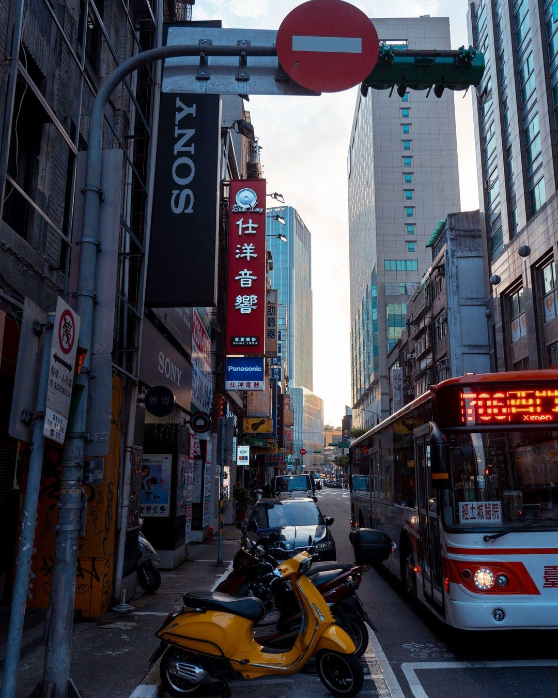
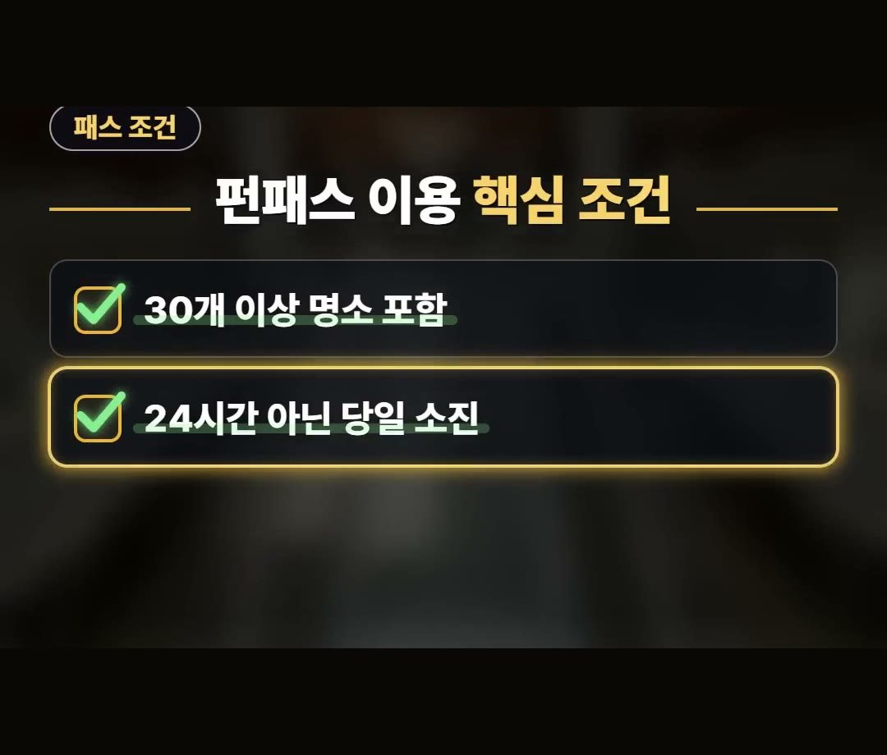
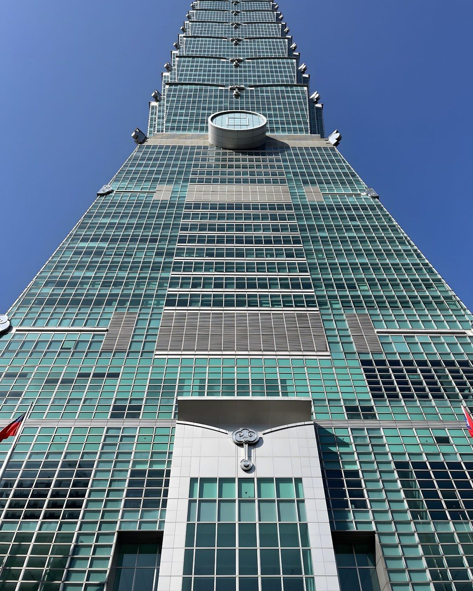
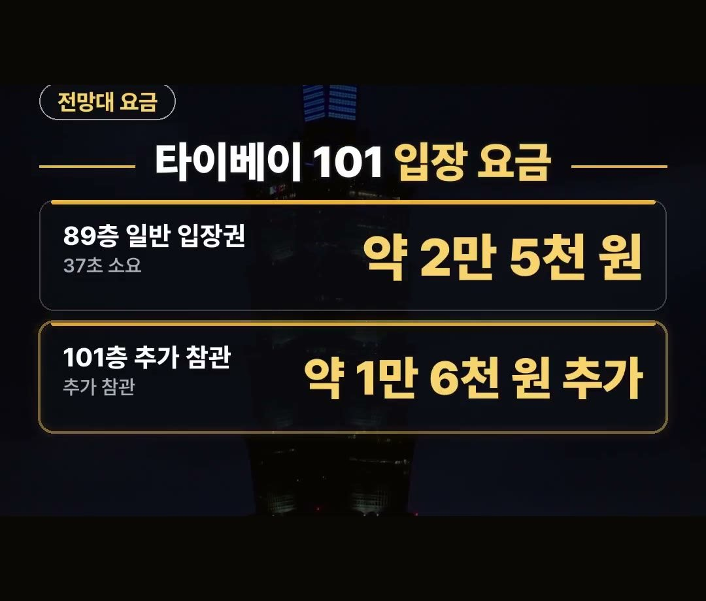
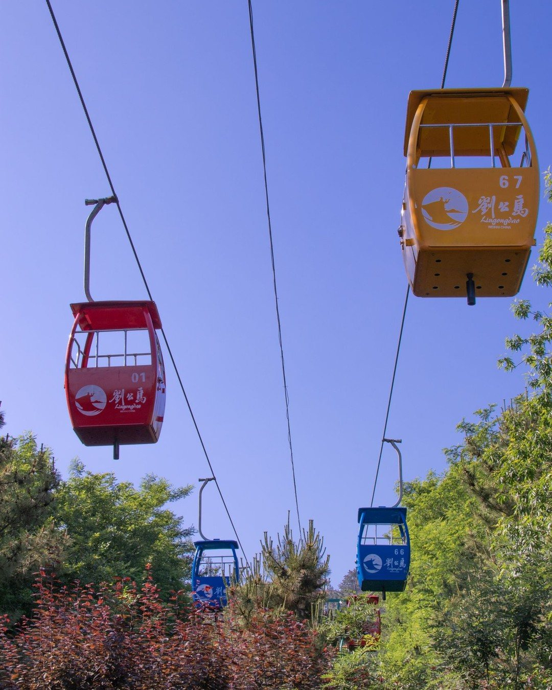
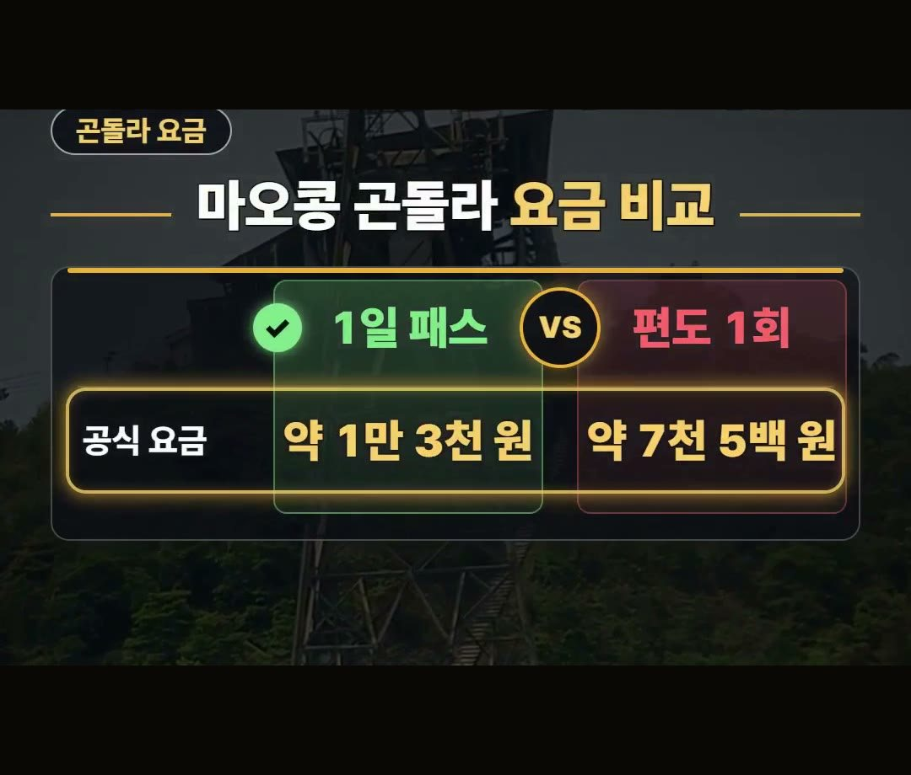
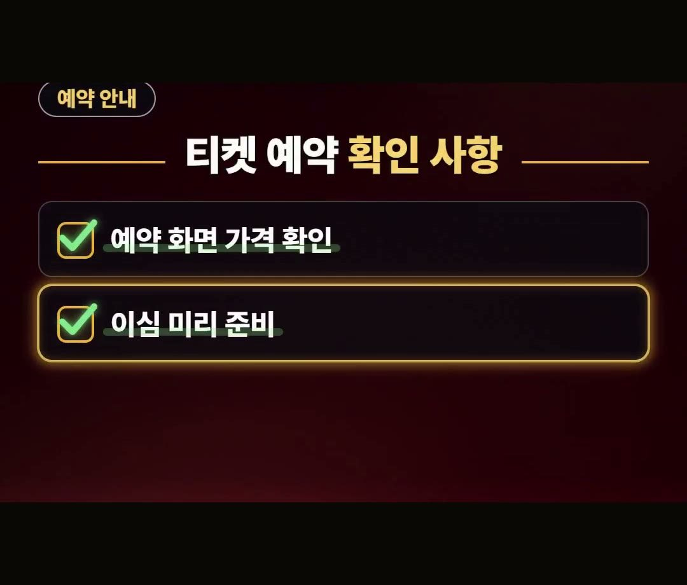

타이베이 여행 패스 3일권, 이 조건 모르면 손해인 이유
※ 이 글에는 제휴 링크가 포함되어 있으며, 링크를 통해 예약·구매하시면 일정 수수료를 받을 수 있습니다. (가격은 같습니다)
※ 이 포스팅은 쿠팡 파트너스 활동의 일환으로, 이에 따른 일정액의 수수료를 제공받습니다.
타이베이 여행을 떠나기 전 주요 명소 입장권과 교통 패스를 어떻게 구매해야 할지 망설여지시나요?
타이베이 여행 준비에 도움 되는 패스 조건과 요금을 정리해 봤어요.
펀패스 무제한 3일권은 성인 기준 약 8만 4천 원(10월 11일 조회 기준)이고, 유효 기간을 시간이 아닌 날짜로 센다는 점을 기억하세요! 💡
타이베이 여행 코스 준비 시 알아두면 좋은 펀패스 조건
타이베이 여행 코스를 계획할 때 자주 살펴보게 되는 타이베이 펀패스 무제한권은 유효 기간을 시간이 아닌 날짜로 센다는 점을 미리 파악해 두어야 합니다.


펀패스 무제한권의 요금과 조건은 다음과 같습니다.
- 무제한 1일권: 성인 기준 약 5만 5천 원 (10월 11일 조회 기준)
- 무제한 3일권: 성인 기준 약 8만 4천 원 (10월 11일 조회 기준)
- 이용 조건: 30개 이상 명소 및 대중교통 이용 포함
- 유효 기간: 시간이 아닌 날짜 기준 (처음 쓴 날부터 연속)
처음 쓴 날이 하루로 계산되니 저녁보다 아침에 시작하는 날을 첫날로 잡는 편이 좋습니다.
타이베이 여행 101 전망대 입장 요금 안내
타이베이 여행 중 방문하는 주요 명소 중 하나인 타이베이 101 전망대 요금 정보입니다.


타이베이 101 전망대의 요금과 이용 안내는 아래와 같습니다.
- 89층 일반 입장권: 약 2만 5천 원 (37초 소요)
- 101층 추가 참관: 약 1만 6천 원 추가
89층까지는 37초 만에 올라가며, 101층을 추가로 참관하려면 약 1만 6천 원의 추가 요금이 발생합니다.
펀패스 무제한권이 있다면 전망대가 포함되는지 먼저 확인해서, 입장권을 따로 한 번 더 사지 않도록 하세요.
타이베이 여행 체크리스트 마오콩 곤돌라 요금 비교
타이베이 여행 체크리스트를 만들 때 포함하기 좋은 마오콩 곤돌라의 요금 정보입니다.


마오콩 곤돌라의 이용 요금 조건은 아래 내용으로 확인 가능합니다.
- 1일 패스: 약 1만 3천 원
- 편도 1회: 약 7천 5백 원
- 혜택: 마오콩 좌선·우선 버스 무료(곤돌라 이용자)
편도 1회 이용보다 1일 패스를 구매할 때의 가격 조건을 미리 비교해 보시면 도움이 됩니다.
타이베이 여행 환전 전 티켓 예약 확인 사항
타이베이 여행 환전이나 출국 준비를 진행하면서 티켓과 데이터 관련 항목도 함께 점검하면 좋습니다.

티켓 및 출국 준비 시 확인 사항입니다.
- 가격 변동: 값은 바뀔 수 있으니 예약 화면에서 확인
- 데이터 준비: 해외 데이터는 공항에서 기다리지 말고 이심으로 미리 준비
값은 변동될 수 있으므로 정확한 금액은 예약 화면에서 직접 확인하는 것을 권해 드립니다.
정리
1. 펀패스 무제한 1일권은 성인 기준 약 5만 5천 원, 3일권은 약 8만 4천 원(10월 11일 조회 기준)이며 유효 기간은 시간이 아닌 날짜 기준(처음 쓴 날부터 연속)입니다.
2. 타이베이 101 전망대 89층은 약 2만 5천 원이고 101층 추가 시 약 1만 6천 원이 추가됩니다.
3. 마오콩 곤돌라 1일 패스는 약 1만 3천 원, 편도 1회는 약 7천 5백 원이며 곤돌라 이용자는 마오콩 좌선·우선 버스가 무료입니다.
최저가 예약 링크는 아래에 모아 두었어요.
지금 쓸 수 있는 여행사 할인
- 📶 해외 데이터는 이심으로 미리 · 마이리얼트립 마이심 「대만 50% 1,200원~」 · 2개 이상 추가 할인 (마이심 화면 표시 기준 · 10/5 확인 · 값은 바뀔 수 있음)
※ 여행사 사정으로 조건이 바뀌거나 일찍 끝날 수 있어요. 예약 전에 여행사 화면에서 한 번 더 확인하세요. (2026-10-05 확인)
📌 2026년 10월 기준 정보예요. 가격은 환율·시기에 따라 달라질 수 있어요.
영상 화면: Pexels (Annie Chen, David Lomax, Joolsmagools ®️, Khan ishaan, Prakash Desai, Timo Volz)
사진: Pexels (Jimmy Liao, 慕思語 musiyu, Henley Wang)
사진: Pixabay (Peggy_Marco)